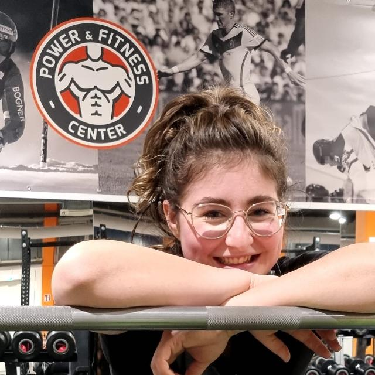

HOME
Du möchtest direkt durchstarten oder bist dir doch noch unsicher? Lass mir eine Nachricht per Mail oder Instagram da und ich werde mich schnellstmöglich bei dir melden.
ABOUT ME
Als leicht übergewichtiger Jugendlicher viel es mir damals schwer mich für eine Sportart zu begeistern. Durch
Reha
Training habe ich damals meinen Weg zum Kraftsport gefunden. Seitdem Liebe und lebe ich für den Sport. Nach wie
vor bin ich neugierig, interessiert und immer erpicht darauf mich in der Materie weiterzubilden und ein besserer
Coach und Athlet zu werden. Ende 2018 startete ich in meinen ersten Powerlifting Wettkampf und bin seither
Wettkampfathlet. Bis jetzt habe ich an insgesamt 7 Wettkämpfen, darunter 2 Deutsche Meisterschaften
teilgenommen.
An deutlich vielen mehr, durfte ich als Coach, Zuschauer und Betreuer teilhaben. Auch in Zukunft freue ich mich
an
Wettkämpfen teilzuhaben und über meine eigenen Grenzen hinaus zu wachsen. Genauso möchte ich meinen Trainees bei
Seite stehen und dabei helfen ihre Ziele zu erreichen. Für mich ist es eine Herzensangelegenheit und weiß es
sehr
zu schätzen auch vielleicht an Deiner sportlichen Reise teilhaben zu dürfen.
In diesem Sinne:
„Lets grow stronger together“
- Louis
COACHING
„Das Gesamtbild beachten!“ Im Coaching ist es mir besonders wichtig den/die Athlet*im Gesamtbild des Lebens zu betrachten. Ein perfekter Trainingsplan oder die perfekte Ausführung allein bringen einen nicht voran, wenn alle anderen Variablen im Alltag einen ausbremsen sollten. Daher bin ich als Coach bemüht meine Trainees (und nicht nur ihre Ziele) kennenzulernen und Stück für Stück eine strake zwischenmenschliche Beziehung aufzubauen. So wird es möglich zusammen ganzheitliche Lösungsansätze zu entwerfen, um die persönlichen Ziele zu erreichen.
TRAINEES
Sarah Konnert
"Louis habe ich 2021 kennengelernt. Nachdem ich gesehen hatte, dass er auf der Deutschen Meisterschaft im KDK 2021 gestartet war, sind wir ins Gespräch gekommen. Ich habe zu der Zeit schon mehrere Jahre Krafttraining betrieben und wollte ein paar Wochen darauf im November 2021 meine Kniebeuge aus maxen. Im Januar 2022 hatte ich dann beschlossen, dass ich den Trainingsfokus darauf legen möchte, stärker zu werden und powerliftingspezifisch zu trainieren. Louis hatte mir von seinem Coaching erzählt und die Leidenschaft und Begeisterung, mit der er darüber gesprochen hat, hat mir direkt ein gutes Gefühl gegeben, sodass ich mich dazu entschieden habe, mich von ihm coachen zu lassen. Im Mai 2022 stand mein erstes SBD-Maxout an. Bis dato hatte ich in meiner „Trainingskarriere“ nur einmal die Beuge ausgemaxt mit 110 kg im November 2021 ausgemaxt. Meine Werte im Mai 2022 lagen dann bei 117,5 kg Squat, 60 kg Bench und 130 kg Deadlift bei ca. 62 kg Körpergewicht. Durch Louis habe ich die Leidenschaft für den Powerliftingsport entdeckt. Die ersten Wettkämpfe sind für 2023 geplant und ich freue mich sehr darauf. Ich kann das Coaching zu 110 % empfehlen und habe es zu keiner Sekunde bereut. Absolute Herzensempfehlung. Grow stronger – der Name ist Programm."